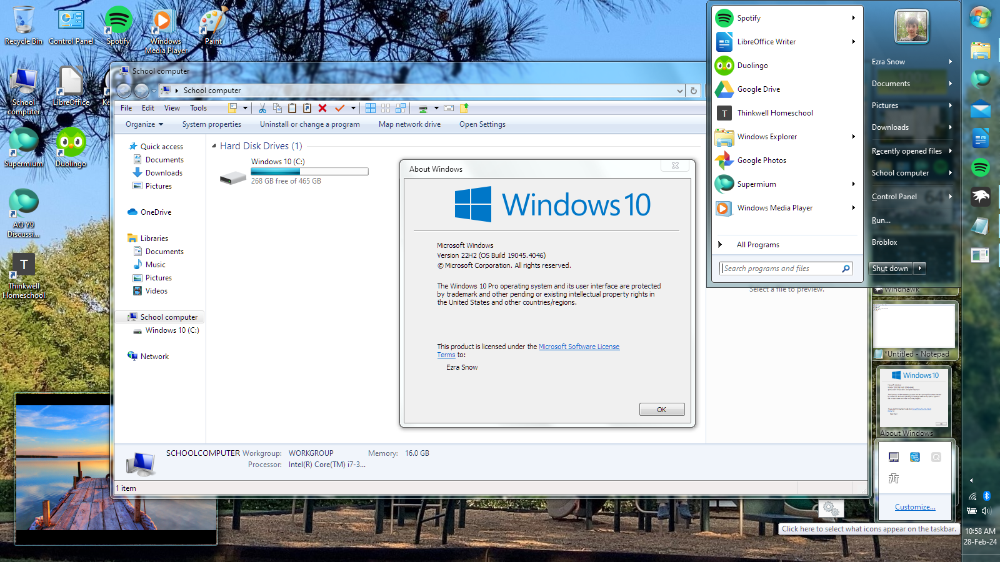

Greetings!
My name is Ezra Snow, or Win761 online. I am really into Windows, specifically Windows 7. (As you may already have guessed.) I am 15, and I live in North Carolina. My favorite color is blue (as evidenced by the large amount of blue on this website), my favorite music genre is epic music/neoclassical, and my favorite bands/artists are Audiomachine and Two Steps From Hell. I also enjoy listening to some dubstep (mainly because of Geometry Dash), but it's not always my thing. I'm also a low-key gamer. You may have noticed that the large image at the top of this page is a picture of a Geometry Dash level. I do play Geometry Dash, although I wouldn't consider myself to be very good at it. I also play Minecraft, Roblox Bedwars, and Blox Fruits. Yes, I play an anime game. I'm not really into anime usually, but Blox Fruits is actually a really good game. Recently, I've started playing Asphalt 8: Airborne too. Also good, but it's very pay to win. My favorite season is spring.
I really enjoy messing with Windows, and watching it break. I am subscribed to a few tech YouTubers, including Enderman, who experiment with Windows and share their findings.
I do my own experimentation on an 11-year old Dell Latitude laptop that my parents bought new back in 2013. I've done two upgrades on it: The RAM has been upgraded from the original 8 GB to 16 GB, and the original 750 GB spinning hard drive (you can really see the laptop's age here) has been upgraded to a 500 GB SSD. With that, it runs Windows 10 really well. It can even do a little bit of light gaming. By which I mean, it can play Minecraft, Bedwars, Blox Fruits, and also Asphalt 8, mostly without lag. Basic everyday tasks are no problem whatsoever. As I mentioned, I do experiment a little bit with this laptop, so allow me to present a beautiful, beautiful screenshot of Windows 10 skinned to look like Windows 7.
{kind=link}
Doesn't that just look beautiful? You also can see that there's gadgets on the desktop, just like Windows 7. I downloaded 8GadgetPack to get the gadgets. Highly recommended if you're doing this. I really love this setup. In all, there is a grand total of 3 system files replaced, and one modified. The 3 replaced are the UIRibbon files, replaced with files from a Windows 8 beta build (because they work and have the same UI as Windows 7), and the 1 modified file was File Explorer's localized resource file to get rid of junk entries in the Taskbar right-click menu. For Aero Glass, I used a FOSS program called DWMBlurGlass, a successor to Aero Glass/Glass8 that works on modern Windows 10 versions. I used several Windhawk mods for various purposes, mainly to tweak the shell to fix some inaccuracies. The actual visual style is a regular Windows visual style, installed with the help of SecureUxTheme, and the start menu/taskbar is done with Open-Shell (also responsible for the FE toolbar), and my own start menu skin.
I really do enjoy customizing Windows. This particular setup took quite a while to make. I decided to compile the resources I used along with the instructions into a transformation pack of sorts. I might upload it to my GitHub for y'all to check out. It's really thorough. And again, the system file replacement/modification is really minimized. In the future, I may do other transformations. But don't expect anything just yet.
I want to become a software developer. I contribute, currently via bug reports, to several FOSS projects that are highlighted on my homepage, and I am learning C++. I know some Python, and I have a lot of knowledge of the Windows batch scripting language, and some PowerShell. So far, I haven't actually made anything beyond some random batch scripts and a couple Open-Shell skins, but I will probably start something sometime in the future. No promises, though.
Â
Opinions
Windows 11 is just really broken.
First. The forced updates. You can't turn off Windows' automatic updates, which is a huge no-no.
The taskbar is now locked to the bottom of the screen, unlike previous versions, where you could move the taskbar to other sides, like the right, left, or top of the screen. Plus, there's a ton of crapware in Windows wasting drive space. Namely: Microsoft Edge, which takes up like 2 GB of storage space. And you can't get rid of it because Microsoft is sMArT.
Finally: Windows 11 is Windows 10, reskinned, with even worse system apps than before. In the registry, it identifies itself as Windows 10. They didn't even do the upgrade right. The start menu also sucks. Windows 10's start menu is slow, awful, and wastes space to some degree. Windows 11's start menu is not as slow, but it wastes even more space.
Windows 11's UI also has TONS of remnants from Windows 10, and even a few from Windows 8, as well as remnants from Windows 7, even Windows Vista, Windows XP, and at least one dialog that's unchanged since Windows 2000. And a specific dialog that's so old it uses the Classic theme UI elements. Very impressive, Windows. Very, very impressive.
iOS really kinda sucks. It's somewhat buggy, it has very little customization (especially compared to Android), and updates have a 50% chance of attempting to destroy your phone's battery.
The iPhone hardware is pretty decent, aside from the lack of the headphone jack. Yes, I'm one of those people. I just really prefer wired earbuds. They just work. They're far cheaper. And they don't have like three additional batteries to kill. I bought a cheap(ish) pair of wireless earbuds, and they lasted like 2 months before the right one suddenly became much louder than the left one. Meanwhile my wired earbuds have been functioning perfectly since day one for nearly three years! Three. Years.
iOS also restricts you a LOT in terms of what you can even do with your iPhone. You can't install apps from outside the App Store (although that's changing at least in the EU), you can't really downgrade to older versions of iOS, neither can you install anything other than iOS on your phone. The point is, iPhones and iOS are really locked down.
And you really can't reskin the OS at all. The iOS widgets also waste a TON of space. Like seriously. An iOS widget apparently needs to take up a third of your homescreen in order to even be actually useful, and even then it's still far less useful than an Android widget that takes up less than half of the space. BRUH. So yeah. All of that sucks.
Back in 2021, Google started to roll out a new UI design across Android, Google software, and Google websites. Currently, they are 90% complete with this UI redesign. Nearly all their apps, on both mobile, web, and desktop, use the new design language. Off the top of my head, most of their iOS apps and the Google Drive for Desktop app on Windows at least, have not received this new UI.
In my opinion, the new UI sucks. I don't like it. It looks unappealing to be honest. (Plus in some apps it's not even properly done.) I have reverted a few apps on my Android 10 tablet to their pre-Material You (I don't want to call it Material Design 3 cause it's not Material Design at all) redesigns because of this. It's just really bad. At least if you don't have an Android 12 or newer device. On Android 12, the Material You apps can automatically adjust their coloring to follow the wallpaper colors. App icons can also switch to a Material You variant, where they are simply a glyph icon overlaid over the Material You background color. But on Android 11 and older, as well as all over the web (and even on Windows where apps can easily change their color scheme to follow the system accent color), the default color gets set to the worst shade of blue possible. *Roblox death noise* (the old one). This is why I don't like Material You. It's supposed to be more personalized, but for me it's really not. I imagine this is so for a lot of people who are stuck with older/cheaper Androids running Android 11 or older. As the saying goes, "You can have it in any color, so long as it's an awful shade of baby blue..." Thanks, Google.
I have seen what Material You looks like when it's actually themed properly, and I'll be honest. Most of my hate comes from the awful default accent color on Android 11 and below. Other than that? It's... not entirely awful. But I think it still deserves some hate. In some cases, the new design wastes space. I also don't like the Material You app icons. If your app icons all look similar, it's that much harder to tell what app it is, especially if you have vision impairment. Wonderful. Simply wonderful.